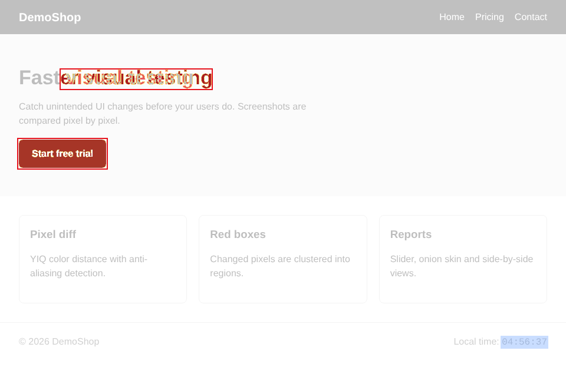
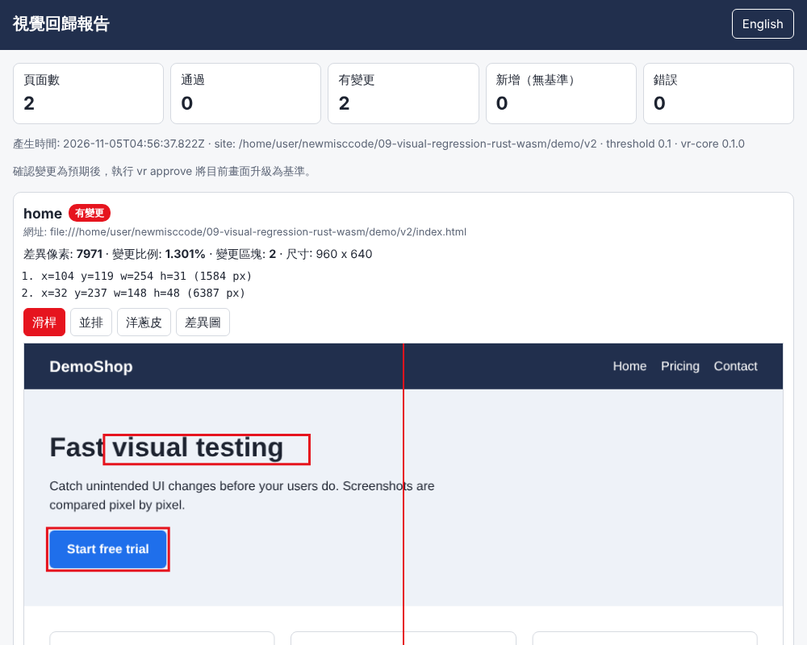
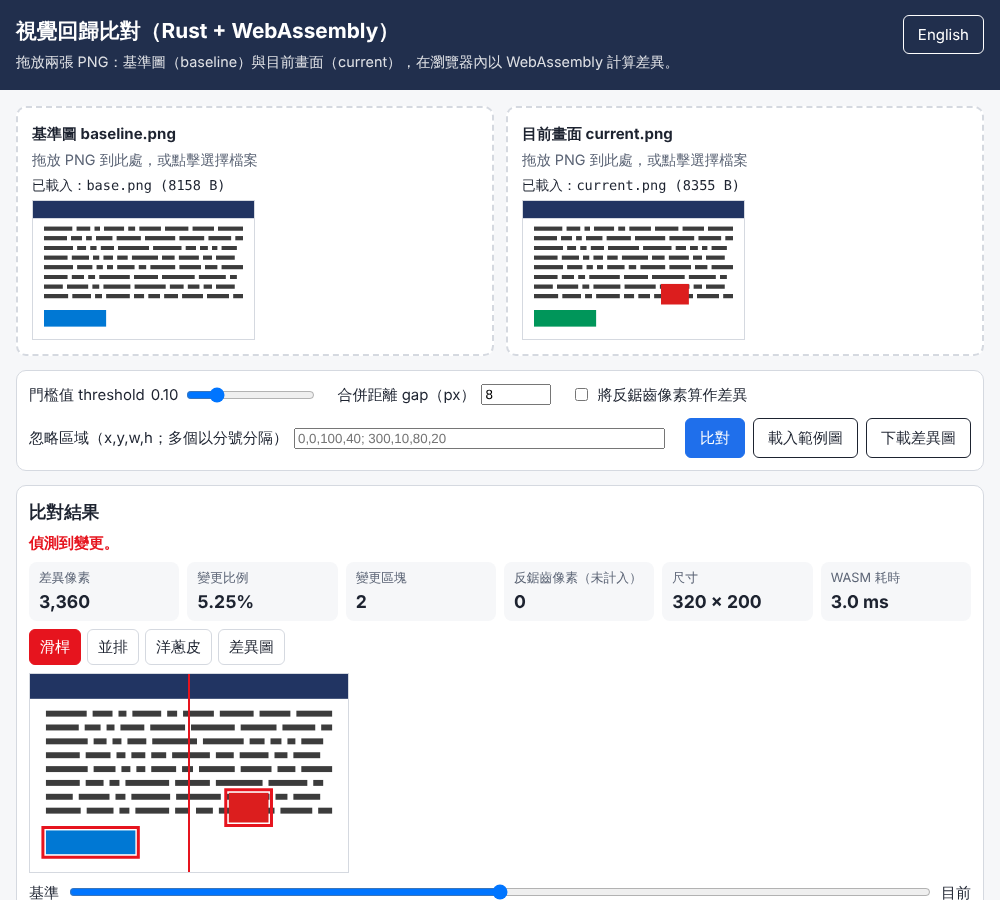

概覽
這是一套「視覺回歸測試」（visual regression testing）工具：把網頁截圖和「基準圖」（baseline）逐像素比對，找出非預期的畫面變化，並以紅框標出變更區塊。
影像比對核心以 Rust 撰寫（crate/），編譯成約 265 KB 的 WebAssembly（web/vr_core.wasm），同一份核心被三個地方使用：
| 使用方式 | 說明 | 入口 |
|---|---|---|
Node CLI vr | compare 比對兩張 PNG；run 用 Playwright 截圖多個網址並和基準比對、輸出自帶 HTML 報告；approve 把目前截圖升級為基準；serve、bench | node src/cli.js、vr.bat |
| 瀏覽器 UI | 拖放兩張 PNG，在瀏覽器裡用 WebAssembly 計算差異；滑桿 / 並排 / 洋蔥皮 / 差異圖檢視；繁中預設、可切換英文 | web/index.html（以 serve-ui.bat 啟動） |
| 原生 CLI | 同一個 crate 以 cargo build --release 編譯的原生執行檔 vr-native，用來對照結果與比較速度 | crate/src/bin/vr_native.rs |
核心功能
- PNG 解碼（Rust
pngcrate；支援 RGB/RGBA/灰階/調色盤、16-bit 會降為 8-bit）。 - pixelmatch 風格的 YIQ 色差比對，含反鋸齒（anti-aliasing）偵測，字型邊緣的微小差異不會被誤判。
- 忽略區域（矩形
x,y,w,h），vr run另可用 CSS 選擇器（例如時鐘#clock）自動算出忽略區域。 - 變更像素以「格狀合併 + 連通元件」聚成邊界框（bounding boxes）。
- 輸出差異圖：淡化灰階背景 + 變更像素半透明紅色覆蓋 + 紅框；反鋸齒像素為黃色、忽略區域為藍色。
- 統計：差異像素數、變更比例（%）、區塊清單、反鋸齒像素數、尺寸不一致提示。
- WASM 與原生結果位元組完全相同（JSON 與差異 PNG 都一致，由
npm test驗證）。
資料夾結構
09-visual-regression-rust-wasm/
crate/ Rust crate vr-core（lib + wasm 匯出 + 原生 CLI vr-native）
src/lib.rs 解碼、比對、反鋸齒、聚類、繪製差異圖、單元測試
src/wasm.rs extern "C" 匯出（不使用 wasm-bindgen）
src/bin/vr_native.rs 原生 CLI（compare / bench / gen-fixtures）
web/ 瀏覽器 UI 與共用 JS：vrcore.js、viewer.js、i18n.js、vr_core.wasm
src/ Node：cli.js、run.js、report.js、server.js、logger.js、paths.js
demo/ 示範網站 v1 / v2（刻意的視覺變更）與 vr.config.json
test/ node --test 測試與 fixtures
scripts/ build-wasm.mjs、demo.mjs
examples/ 測試時自動產生的截圖（UI、報告、紅框差異圖）
*.bat / vr.ps1 Windows 啟動器快速開始
需求：Node.js 20 以上（已測 22.23.4）。vr compare 與瀏覽器 UI 只需要 Node；vr run 與測試需要 Playwright + Chromium。已編譯好的 web/vr_core.wasm 已隨附，不需要安裝 Rust，除非你要修改核心或比較原生速度。
Windows（繁體中文環境）
- 安裝 Node.js LTS（nodejs.org）。
- 在檔案總管中雙擊
setup.bat：執行npm install（安裝 Playwright）與npx playwright install chromium。視窗會顯示目前資料夾與結束碼（exit code 0 表示成功）。 - 雙擊
run-demo.bat：截圖 demo v1 → 升級為基準 → 截圖 demo v2 → 產生報告。最後一行會印出報告路徑，預設在%ProgramData%\NewMiscCode\09-visual-regression-rust-wasm\report.html。 - 雙擊
serve-ui.bat，再用瀏覽器開http://127.0.0.1:5179/使用拖放 UI。 - 雙擊
run-tests.bat執行全部測試。
呼叫鏈：.bat（純 ASCII、CRLF，pushd "%~dp0"、顯示路徑與結束碼、pause）→ vr.ps1（UTF-8 BOM）→ node。命令列使用：
vr.bat compare test\fixtures\base.png test\fixtures\current.png --out diff.png
vr.bat run --site demo\v2
vr.bat approvevr.bat 會先切換到專案資料夾，因此相對路徑以專案資料夾為準；其他位置的檔案請用完整路徑。Linux / macOS
cd 09-visual-regression-rust-wasm
npm install # 選用：若全域已有 playwright 可略過
npx playwright install chromium # 選用：同上
node src/cli.js compare test/fixtures/base.png test/fixtures/current.png --out output/diff.png
npm run demo # v1 -> approve -> v2 -> output/report.html
npm run serve # http://127.0.0.1:5179/
npm test（選用）從原始碼建置 Rust 核心
rustup target add wasm32-unknown-unknown
npm run build:wasm # = node scripts/build-wasm.mjs，輸出 web/vr_core.wasm
npm run build:native # cargo build --release -j 2，輸出 crate/target/release/vr-native
npm run test:rust # cargo test使用說明
vr comparevr runvr approve設定檔瀏覽器 UIHTML 報告原生 CLI
vr compare：比對兩張 PNG
node src/cli.js compare baseline.png current.png --out diff.png --threshold 0.1 --ignore 0,0,200,40| 選項 | 預設 | 說明 |
|---|---|---|
--out FILE | （不輸出） | 寫出差異圖（紅框 + 半透明紅色覆蓋） |
--threshold N | 0.1 | 0–1，越小越敏感（YIQ 色差門檻，與 pixelmatch 相同語意） |
--ignore x,y,w,h | — | 忽略區域，可重複多次 |
--aa | 關 | 把反鋸齒像素也算成差異 |
--gap N | 8 | 合併距離（格子大小，px）；0 = 嚴格 8 連通 |
--json | 關 | 輸出與原生 CLI 相同格式的 JSON |
--out-dir DIR | Windows：%ProgramData%\NewMiscCode\09-visual-regression-rust-wasm；Linux：./output | 輸出與日誌位置，也可用環境變數 VR_OUTPUT_DIR |
--debug | 關 | 寫入 debug 等級 JSONL 日誌並在 stderr 顯示 |
--lang en | zh-TW | CLI 訊息語言（亦可 VR_LANG=en） |
結束碼：0 無差異、1 有差異、2 錯誤（參數錯誤、PNG 損毀等）。
vr run：截圖網址並與基準比對
node src/cli.js run --config demo/vr.config.json --site demo/v2
node src/cli.js run --config my.config.json --site http://localhost:3000/ --baseline-dir baselines--site 可以是資料夾（以 file:// 開啟）或 http(s) 網址。流程：Playwright Chromium（deviceScaleFactor 1、reducedMotion）開啟每個頁面 → 等字型載入 → 計算 ignoreSelectors 的位置 → 全頁截圖存到 current/ → 若 baseline/ 有同名圖就用 WASM 比對、存 diff/ → 寫出 report.html（自帶所有圖片）與 report.json。
頁面狀態：pass（無差異）、changed（有差異）、new（尚無基準）、error。全部 pass 時結束碼 0，否則 1。
vr approve：把目前截圖升級為基準
node src/cli.js approve # 全部
node src/cli.js approve --name home # 只升級 home設定檔（demo/vr.config.json）
{
"viewport": { "width": 960, "height": 640 },
"fullPage": true,
"threshold": 0.1,
"gap": 12,
"ignoreSelectors": ["#clock"],
"pages": [
{ "name": "home", "path": "index.html" },
{ "name": "pricing", "path": "pricing.html", "ignore": [[0, 0, 100, 20]] }
]
}每頁可設 path（相對於 --site）或完整 url，以及 ignore、ignoreSelectors、gap。另可設 baselineDir（相對於設定檔，適合把基準圖放進版本控制）。
瀏覽器 UI
- 執行
serve-ui.bat或npm run serve，開啟http://127.0.0.1:5179/。 - 把基準圖拖到左邊、目前畫面拖到右邊（或點擊選擇檔案；也可按「載入範例圖」）。兩張都載入後自動比對。
- 調整門檻值、合併距離、反鋸齒、忽略區域（
x,y,w,h; x,y,w,h）後按「比對」。 - 切換「滑桿 / 並排 / 洋蔥皮 / 差異圖」檢視；按「下載差異圖」存檔。右上角按鈕切換 English / 中文（記在 localStorage，也可用
?lang=en）。
fetch 載入 vr_core.wasm，必須透過 http 開啟；直接雙擊 web/index.html（file://）會顯示載入失敗的提示。HTML 報告
report.html 是單一檔案：圖片以 data URI 內嵌、檢視器與中英文字串也內嵌，可直接寄給同事或附在 CI 產出物。每頁顯示狀態、差異像素、比例、區塊座標清單，以及滑桿（預設用於有變更的頁面）/ 並排 / 洋蔥皮 / 差異圖檢視；滑桿與洋蔥皮檢視上另以 SVG 疊加紅框。
原生 CLI（vr-native）
crate/target/release/vr-native compare a.png b.png --out diff.png --threshold 0.1 --ignore 0,0,10,10
crate/target/release/vr-native bench a.png b.png --iter 20
crate/target/release/vr-native gen-fixtures output/bench逐步驗證指南
以下每一步都附「預期結果」。數字是在本機（Linux、Node 22.23.4、Chromium 由 Playwright 1.63.0 驅動）實測所得；Windows 字型不同，demo 頁的像素數會不同，但「哪些區塊有變更」應一致。
- 比對範例圖（只需 Node）
預期：結束碼 1，輸出node src/cli.js compare test/fixtures/base.png test/fixtures/current.png --out output/diff.png有差異: diffPixels=3360 (5.25%) boxes=2 aa=0 size=320x200 ... box x=200 y=120 w=40 h=30 pixels=1200 box x=16 y=158 w=90 h=24 pixels=2160 - 忽略區域：加上
--ignore 200,120,40,30 --ignore 16,158,90,24，預期「相同（在門檻值內）」、結束碼 0。 - 示範網站 v1 → v2：執行
run-demo.bat（或npm run demo）。預期三段輸出：
v2 的刻意變更：首頁標題「Fast → Faster」、按鈕由藍變綠；價格頁「NT$290 → NT$390」、Enterprise 多了「NEW」標籤。頁尾時鐘每次不同，但已由=== 1/3 v1 -> current (new) === new home / new pricing (exit code 1) === 2/3 approve v1 as baseline === 已升級為基準: home, pricing (exit code 0) === 3/3 v2 vs baseline (expect: changed) === changed home diffPixels=7971 (1.301%) boxes=2 changed pricing diffPixels=791 (0.129%) boxes=2ignoreSelectors: ["#clock"]忽略（差異圖中呈藍色）。
examples/diff-home.png：v1 → v2 首頁差異圖，紅框 = 變更區塊，藍色 = 忽略的時鐘 - 開啟報告：用瀏覽器開啟上一步印出的
report.html。預期摘要「有變更 2」，home 列出 2 個區塊；切換滑桿/並排/洋蔥皮/差異圖；右上角可切換 English。
examples/report.png：自帶 HTML 報告（滑桿檢視，紅框以 SVG 疊加） - v1 再跑一次應全部通過：
node src/cli.js run --site demo/v1→ 兩頁pass、結束碼 0（證明截圖穩定、時鐘忽略有效）。之後若要回到 v2 驗證可再執行步驟 3。 - 瀏覽器 UI：執行
serve-ui.bat，開http://127.0.0.1:5179/，按「載入範例圖」或拖放test/fixtures的兩張圖。預期：差異像素 3,360、變更比例 5.25%、變更區塊 2、狀態「偵測到變更。」；按右上「English」後標題變為英文。
examples/ui-diff.png：瀏覽器 UI（繁中預設），滑桿檢視含紅框 - 除錯模式：開
http://127.0.0.1:5179/web/index.html?debug=1，頁面下方出現「除錯紀錄」，DevTools Console 輸入VR.state、VR.logs、VR.setLang('en')可操作。 - 自動測試：
run-tests.bat或npm test。預期tests 10 / pass 10 / fail 0（若未建置原生 CLI，「wasm 與原生相同」一項會顯示 skipped）。Rust 單元測試：npm run test:rust→6 passed。 - 效能比較（需 Rust 原生建置）：
bench.bat或npm run bench，輸出 wasm 與 native 的中位數毫秒與比值（見效能比較）。
開發者指南
架構Rust↔JS 邊界演算法建置 wasm如何擴充測試版本變更紀錄
架構
crate/src/lib.rs (decode_png / compare / cluster / render_diff / encode_png)
/ \
crate/src/wasm.rs (extern "C") crate/src/bin/vr_native.rs (原生 CLI)
|
web/vr_core.wasm (wasm32-unknown-unknown, 約 265 KB)
|
web/vrcore.js (共用的非同步包裝：記憶體配置、選項字串、JSON 解析)
/ \
src/core.js (Node 載入) web/app.js (瀏覽器 UI)
|-- src/cli.js compare / run / approve / serve / bench
|-- src/run.js Playwright 截圖 + 比對 + approve
`-- src/report.js 自帶報告（內嵌 web/viewer.js + web/i18n.js）Node 端全部為 async（fs/promises、Playwright、子行程）。wasm 實例是單執行緒的，core.compare() 以 Promise 佇列序列化呼叫。
Rust ↔ JS 邊界
不使用 wasm-bindgen，只用原始 extern "C" 匯出與手動記憶體管理，因此 wasm 沒有任何 import、JS 端零相依：
| 匯出 | 說明 |
|---|---|
vr_alloc(len) -> ptr | 在 wasm 線性記憶體配置 len 位元組（std::alloc），JS 用 new Uint8Array(memory.buffer).set(bytes, ptr) 寫入。注意配置後要重新取得 memory.buffer（記憶體可能成長）。 |
vr_free(ptr, len) | 釋放未交給 vr_compare 的緩衝區。 |
vr_compare(aPtr,aLen,bPtr,bLen,optPtr,optLen,render) -> u32 | 解碼兩張 PNG、比對、（render=1 時）繪製並編碼差異 PNG。三個輸入緩衝區的所有權移交給 Rust 並由 Rust 釋放。回傳 0 成功、1 失敗。 |
vr_out_json_ptr/len | 結果 JSON（UTF-8）；失敗時為 {"ok":false,"error":"..."}。 |
vr_out_png_ptr/len | 差異 PNG 位元組。JS 讀出（slice 複製）後呼叫 vr_out_clear()。 |
vr_version_ptr/len | crate 版本字串。 |
選項以簡單字串傳遞（由 Rust Options::parse 解析，原生 CLI 也用同一格式）：threshold=0.1;aa=0;gap=8;minPixels=1;fade=0.3;overlay=0.7;ignore=x,y,w,h|x,y,w,h。錯誤一律以 Result 傳回 JSON，不會 panic（release 設定 panic = "abort"，真的 panic 會變成 JS 的 RuntimeError: unreachable）。
結果 JSON 範例：
{"ok":true,"version":"0.1.0","width":320,"height":200,"sizeA":[320,200],"sizeB":[320,200],
"sizeMismatch":false,"totalPixels":64000,"diffPixels":3360,"aaPixels":0,"ignoredPixels":0,
"percent":5.25,"boxes":[{"x":200,"y":120,"w":40,"h":30,"pixels":1200},{"x":16,"y":158,"w":90,"h":24,"pixels":2160}]}演算法說明
- 尺寸：兩張圖尺寸不同時，以透明像素補齊到較大的寬高（透明與白色混合後視為白色），並回報
sizeMismatch。 - 色差（YIQ）：每個像素先依 alpha 與白色混合，再轉 YIQ：
Y = 0.29889531R + 0.58662247G + 0.11448223B，I、Q同理；距離Δ = 0.5053·ΔY² + 0.299·ΔI² + 0.1957·ΔQ²（Kotsarenko & Ramos 的感知加權）。黑白最大距離為 35215，所以門檻maxDelta = 35215 × threshold²，|Δ| > maxDelta才算不同。 - 反鋸齒偵測（Vysniauskas 2009，與 pixelmatch 相同）：看 3×3 鄰域的亮度差；若同色鄰居超過 2 個則不是反鋸齒；否則找出最暗與最亮的鄰居，若其中之一在兩張圖中都位於「平坦區域」（有 3 個以上同色鄰居），此像素就是邊緣的反鋸齒像素，標為黃色且不計入差異（
--aa可改為計入）。 - 忽略區域：落在任一矩形內的像素標為 ignored（藍色），不參與比較，也不計入百分比的分母。
- 聚類成紅框：把影像切成
gap×gap的格子，含差異像素的格子為「熱格」；熱格以 8 連通做 union-find，相鄰（約一格距離內）的變更合為同一群；再對每群計算實際像素的緊密邊界框，最後把互相重疊的框反覆合併直到穩定。整體為 O(像素數 + 格數)，大量雜訊也不會退化成 O(n²)。gap=0等於純像素 8 連通。 - 繪製：未變更像素 = 灰階並淡化（
fade）；變更像素 = 原色與紅色以overlay（0.7）混合；框外擴 3 px、線寬 2 px。
浮點運算只用 IEEE 754 的加減乘除（無 FMA），因此原生與 wasm 的結果逐位元相同，測試直接比對 SHA-256。
如何建置 wasm
rustup target add wasm32-unknown-unknown
npm run build:wasm
# 等同：cargo build --release -j 2 --lib --target wasm32-unknown-unknown --manifest-path crate/Cargo.toml
# 再複製 crate/target/wasm32-unknown-unknown/release/vr_core.wasm 到 web/vr_core.wasmRelease 設定：opt-level=3、lto=true、codegen-units=1、panic="abort"、strip=true。不需要 wasm-bindgen 或 wasm-pack。產物約 265 KB（< 2 MB，因此直接提交到版本庫；crate/target/ 不提交）。若要更小可用 opt-level="s" 或 binaryen 的 wasm-opt -Oz（未內建）。
如何擴充
- 新的比對選項：在
Options（lib.rs）加欄位與parse的 key，在web/vrcore.js的optionString加對應欄位，再在src/cli.js與vr_native.rs加旗標。 - 新的輸出（例如遮罩 PNG）：在
wasm.rs的OUT加一個緩衝區與一組_ptr/_len匯出，JS 端在compareSync讀出。 - 新的檢視模式：在
web/viewer.js的VIEW_MODES與html()加一個分支，UI 與報告會一起得到。 - 新的語系字串：
web/i18n.js（UI 與報告）、src/messages.js（CLI）。 - 自己的網站：複製
demo/vr.config.json，改pages，以--site http://...指向你的開發伺服器。
測試
| 檔案 | 內容 |
|---|---|
crate/src/lib.rs（cargo test，6 項） | 相同圖 → 0 差異；已知矩形 → 框位置正確；兩處變更 → 兩個框；忽略區域（全部與部分）；反鋸齒邊緣不計、include_aa 會計；門檻 0 與 0.1 的差別；尺寸不一致；選項解析；紅框繪製位置 |
test/core.test.mjs | Node 載入 wasm；fixtures 的數值與框；錯誤以例外回報且核心仍可用；與原生 CLI 的 JSON 與差異 PNG 位元組相同（4 組選項） |
test/cli.test.mjs | vr compare 結束碼/JSON/忽略/錯誤參數/JSONL 日誌；vr run v1 → approve → v1 全通過 → v2：每個 [data-vr-change] 元素都有框、且沒有多餘的框；報告是自帶的 |
test/ui.test.mjs | Playwright：UI 上傳兩張 PNG、統計數字、四種檢視、忽略區域、語言切換、390px 無水平捲動、?debug=1 與 window.VR；報告的檢視與語言切換；全程無 console error；輸出 examples/ 截圖 |
版本
| 元件 | 版本 |
|---|---|
| vr-core（crate / wasm / CLI） | 0.1.0 |
| rustc / cargo | 1.97.0 |
| png crate | 0.17.16 |
| Node.js | 22.23.4（需求 >= 20） |
| Playwright | 1.63.0（optionalDependencies；也可用全域安裝） |
| web/vr_core.wasm | 271,391 bytes |
變更紀錄
- 0.1.0（2026-11-05）：首版。Rust 核心（PNG 解碼/編碼、YIQ + 反鋸齒、忽略區域、格狀聚類、紅框差異圖）；raw extern "C" wasm；Node CLI compare/run/approve/serve/bench；瀏覽器 UI；自帶 HTML 報告；原生 CLI；示範網站 v1/v2；zh-TW/en；JSONL 日誌；Windows 啟動器。
效能比較（WASM vs 原生）
量測範圍為完整流程：解碼兩張 PNG + 比對 + 繪製差異圖 + 編碼 PNG（WASM 端另含 JS↔wasm 的記憶體複製）。指令：npm run bench（自動產生 1600×1200 測試圖）或 node src/cli.js bench a.png b.png --iter 30。環境：4 核心共用 Linux 主機（同時有其他工作在跑，數字僅供相對比較），Node 22.23.4（V8），Rust 1.97.0 release + LTO。
| 輸入 | WASM 中位數 | 原生中位數 | WASM / 原生 | 原生細項（解碼 / 比對 / 繪製+編碼） |
|---|---|---|---|---|
| 320×200 fixture（3,360 差異像素） | 2.99 ms | 1.75 ms | 1.71× | 0.58 / 0.42 / 0.81 ms |
| 960×640 demo 首頁截圖（7,971 差異像素） | 30.7 ms | 18.5 ms | 1.66× | 6.5 / 3.5 / 9.1 ms |
| 1600×1200 合成頁（39,600 差異像素） | 84.1 ms | 54.8 ms | 1.53× | 18.1 / 10.2 / 27.6 ms |
觀察：WASM 約為原生的 1.5–1.7 倍時間，對一般截圖（< 100 ms）已足夠互動使用。時間大多花在 PNG 解碼與編碼（zlib），比對本身最快。瀏覽器 Chromium 內的 UI 對 320×200 fixture 約 3–4 ms（UI 的「WASM 耗時」欄位）。原生版本可再加上多執行緒（rayon）或 SIMD，wasm 則可啟用 simd128；目前為求兩者結果完全一致且建置簡單，未使用。
除錯與日誌
CLI：JSONL 日誌
- 位置：
<out-dir>/logs/vr-YYYY-MM-DD.jsonl。預設 out-dir：Windows%ProgramData%\NewMiscCode\09-visual-regression-rust-wasm，Linux/macOS 為專案下的output/；以--out-dir或環境變數VR_OUTPUT_DIR變更。 - 等級：
debug<info<warn<error。平常寫入 info 以上；加--debug後寫入 debug（含參數、每頁 console 訊息、HTTP 請求）並同步顯示在 stderr，結束時印出日誌路徑。 - 每行一筆 JSON：
{"ts":"...","level":"info","component":"run","pid":1234,"msg":"page done","name":"home","status":"changed","diffPixels":7971,"boxes":2,"ms":164}
node src/cli.js run --site demo/v2 --debug
# Windows PowerShell 篩選錯誤：
Get-Content "$env:ProgramData\NewMiscCode\09-visual-regression-rust-wasm\logs\*.jsonl" | ConvertFrom-Json | Where-Object level -eq 'error'瀏覽器：?debug=1 與 window.VR
http://127.0.0.1:5179/web/index.html?debug=1：顯示「除錯紀錄」面板，並以console.debug輸出。- DevTools 物件
window.VR：VR.state（目前輸入與結果）、VR.logs、VR.compare()、VR.setLang('en')、VR.core.compare(aBytes, bBytes, {threshold:0.05})、VR.core.exports（原始 wasm 匯出）。 - 報告頁有
window.VR_REPORT（data、setLang()）。
原生 CLI
vr-native 在 stderr 印出耗時；錯誤時 stdout 為 {"ok":false,"error":"..."}，結束碼 2。
限制與疑難排解
已知限制
- 只支援 PNG（不支援 JPEG/WebP）；單張上限 5000 萬像素。
- 尺寸不同時以補齊方式比對，若頁面高度改變，下方內容整體位移會被視為大量差異（不做位移對齊）。
- 聚類以格子距離合併，非常接近的兩個獨立變更可能合為一框；可調小
--gap。 - 截圖結果受作業系統字型與 GPU 影響：基準圖請在同一種環境（同 OS、同字型）產生與比對。Linux 產生的基準圖拿到 Windows 比對會出現大量文字差異。
- 報告把所有圖片內嵌，頁面很多或很長時檔案會變大（每頁約數百 KB）。
- WASM 為單執行緒；未使用 SIMD 與多執行緒。
疑難排解
| 症狀 | 原因與處理 |
|---|---|
Playwright not found | 執行 setup.bat（或 npm install 與 npx playwright install chromium）。vr compare 與 UI 不需要 Playwright。 |
| UI 顯示「無法載入 WebAssembly 核心」 | 用 file:// 開啟了 UI；請用 serve-ui.bat 透過 http 開啟。 |
cannot load wasm core | web/vr_core.wasm 遺失：執行 npm run build:wasm（需要 Rust）。 |
| 連接埠 5179 被占用（EADDRINUSE） | node src/cli.js serve --port 5180。 |
| v1 對 v1 也出現差異 | 頁面有動畫、時間、隨機內容：在設定檔加 ignoreSelectors 或 ignore；或提高 threshold。 |
| 寫入 ProgramData 失敗（權限） | 以 --out-dir 或 VR_OUTPUT_DIR 指到使用者可寫的資料夾。 |
| 中文亂碼 | vr.ps1 已設定 UTF-8 輸出；若仍亂碼，請在 PowerShell 執行 chcp 65001。 |
| 原生比對測試 skipped | 尚未執行 npm run build:native。 |
English summary
What it is. A visual regression tool whose image-diff core is written in Rust (crate/) and compiled to a ~265 KB WebAssembly module (web/vr_core.wasm, raw extern "C" exports, no wasm-bindgen, zero JS dependencies). The same core powers a Node CLI, a browser UI and a native Rust CLI; WASM and native outputs are byte-identical (verified by tests).
Core. PNG decode (png crate) → pad to common size → pixelmatch-style YIQ delta with anti-aliasing detection (maxDelta = 35215 × threshold²) → ignore rectangles → grid-merge clustering (union-find over gap×gap cells, then tight pixel bounding boxes, overlapping boxes merged) → diff image (faded grayscale context, semi-transparent red overlay, yellow AA, blue ignored, red boxes) → stats JSON.
CLI. node src/cli.js compare a.png b.png --out diff.png --threshold 0.1 --ignore x,y,w,h (exit 0 same / 1 diff / 2 error); run --config demo/vr.config.json --site demo/v2 screenshots pages with Playwright, compares against the baseline folder and writes a self-contained report.html (slider / side-by-side / onion-skin / diff views, red boxes); approve promotes current to baseline; serve starts the UI; bench times WASM vs native. Windows: setup.bat, run-demo.bat, serve-ui.bat, run-tests.bat, bench.bat, vr.bat (→ vr.ps1 → node).
Output/logs. Default output dir is %ProgramData%\NewMiscCode\09-visual-regression-rust-wasm on Windows and ./output elsewhere (--out-dir / VR_OUTPUT_DIR). JSONL logs with levels in logs/; --debug for debug level. Browser: ?debug=1 and window.VR.
Performance (full pipeline incl. PNG decode/encode, shared 4-core host): WASM is about 1.5–1.7× slower than native — 320×200: 2.99 vs 1.75 ms; 960×640 screenshot: 30.7 vs 18.5 ms; 1600×1200: 84.1 vs 54.8 ms.
Verification. npm run test:rust (6 Rust unit tests) and npm test (10 Node tests: wasm vs native equality, CLI, demo v1→v2 run where every changed element gets a box and no extra boxes appear, Playwright UI/report checks, no console errors). Step-by-step guide with expected numbers: 逐步驗證指南.
Limitations. PNG only; no shift/alignment detection (page-height changes show as large diffs); baselines must be produced on the same OS/fonts; single-threaded, no SIMD.